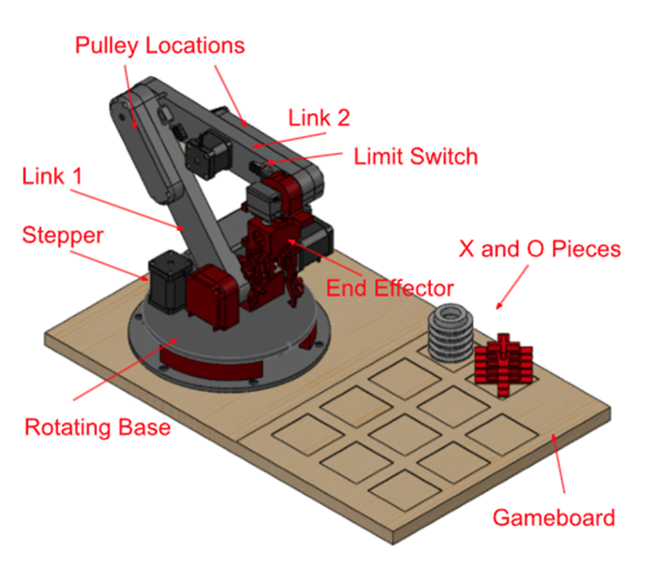
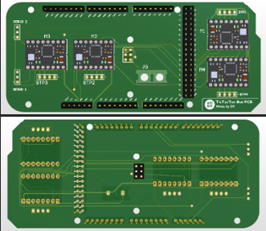
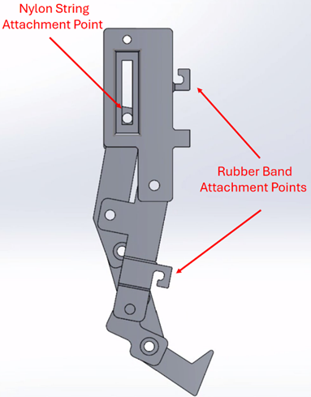
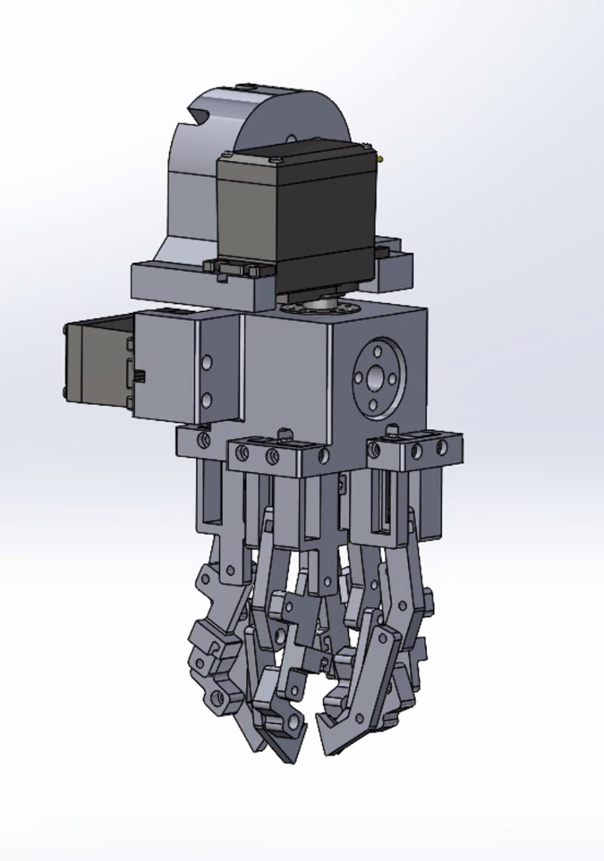

Skills - Object Detection, 3D Printing, PCB, C, Embedded C, Qt for GUI, Python, Depth Camera - Intel Realsense , UART Protocol, Inverse Kinematics
Overview
This project, part of the Mechatronics 2 course at CU Boulder, was executed by Team Raspberry Fly to design a robotic system for safe human-robot interaction through a real-world game of Tic-Tac-Toe. The system consists of a vision-guided robotic arm and end effector, developed using 3D printed parts, stepper motors, a RealSense camera, and deep learning-based detection. The robot autonomously detects player moves, computes optimal responses, and physically interacts with the board using inverse kinematics.
Project Demo
Watch the full demo of our Tic-Tac-Toe Robot in action:

Hardware
- Raspberry Pi
- Arduino Mega
- Intel RealSense Depth Camera
- TMC2209 Stepper Driver
- Servo Motors
System Architecture
- Mechanical Design: Fully 3D printed robotic arm actuated via stepper motors and gearboxes, using belts to reduce load.
- Electronics: Custom PCB shield for Arduino Mega with four TMC2209 stepper drivers and dual servo control headers.
- Vision: YOLOv8 model trained on a custom dataset using RTX 4070 GPU; detects player moves with high confidence.
- Control: Inverse kinematics module calculates joint angles; Python-embedded logic handles move planning and serial communication.
- Communication: Custom UART-based serial protocol enables bi-directional sync between PC and Arduino.

Implementation Details
- Inverse Kinematics: Trigonometric simplification reduces the 5-DOF system to planar 2-DOF; equations derived using Law of Cosines.
- Game Logic: Robot detects change in board state, randomly selects a valid cell, and initiates an action sequence to place a tile.
- End Effector: Bio-inspired gripper with nylon string actuation and rubber band counter-tension mimics finger grip dynamics.
- Startup Routine: All joints perform homing via physical stops and limit switches to avoid positional drift due to step loss.


Conclusion
Team Raspberry Fly demonstrated a fully functioning, safe HRI system with an interactive robotic platform. Through modular hardware design, efficient vision algorithms, and robust communication, the system showcases a compelling proof of concept for future applications in collaborative robotics. Lessons in power isolation, modular testing, and serial synchronization were key outcomes from this project.